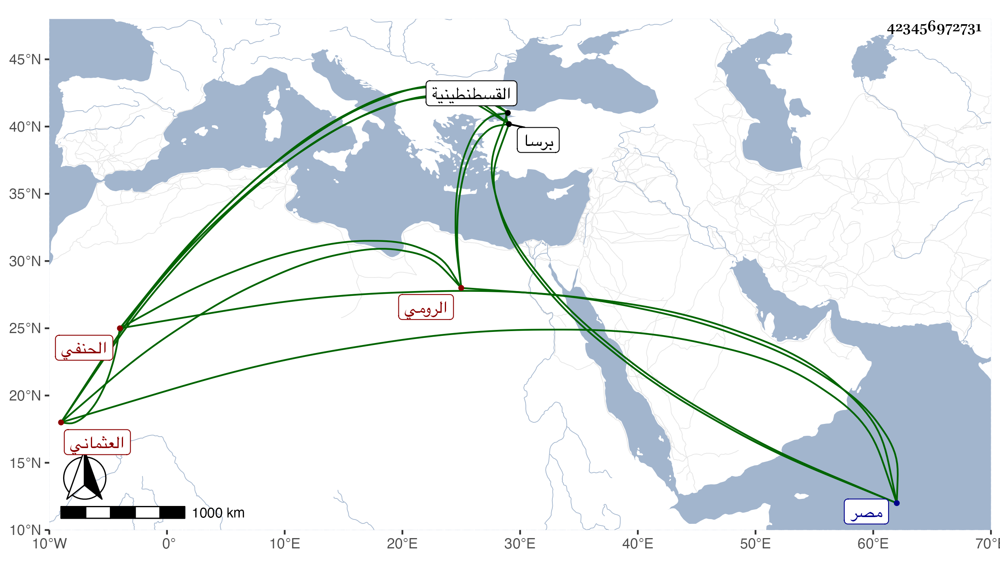

0902Sakhawi.DawLamic.ITO20230111-ara1.EIS1600.423456972731
Biography ID: 423456972731
626
علي بن أحمد بن محمد بن أيوب الشرملو الأصل العثماني جق الرومي الحنفي القادم من ابن عثمان في الرسلية في جمادى الثانية واجتمعت به فذكر ما يدل على أنه ولد بعد الأربعين وثمانمائة وأنه اشتغل عند مولانا عبدين المقيم بأماصية بها وخطيب زاده الأرنيقي وهو الآن حي باسطنبول وخدم سلطانهم بالإمامة في حياة أبيه وبعده وشهد معه عدة غزوات ثم بأخرة استقر به في قضاء برصا بعد صرف مولى كسدلو وذلك في أثناء سنة خمس وتسعين ولما قدم بولغ في إكرامه بحيث لم نعلم في هذه المدد إكرام قاصد كهو ، ولم أر له فضيلة ولا فهمت عنه مشاركة نعم هو متين العقل قليل الكلام وما أظنه مر به في عمره مثل الأيام التي مرت به في مصر والعز الذي كان فيه .
